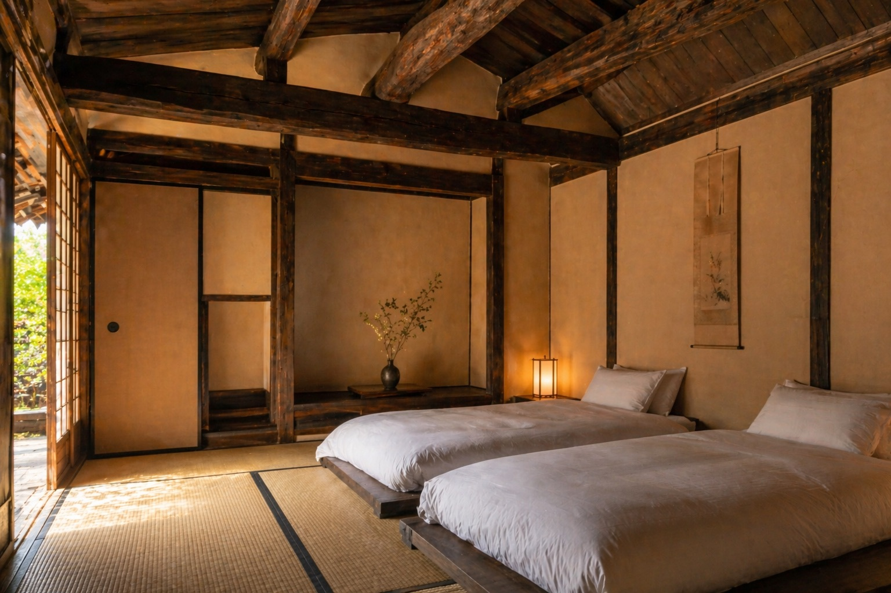
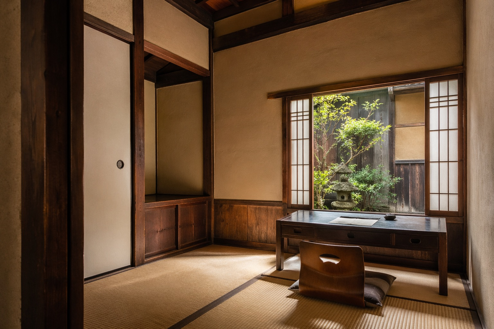
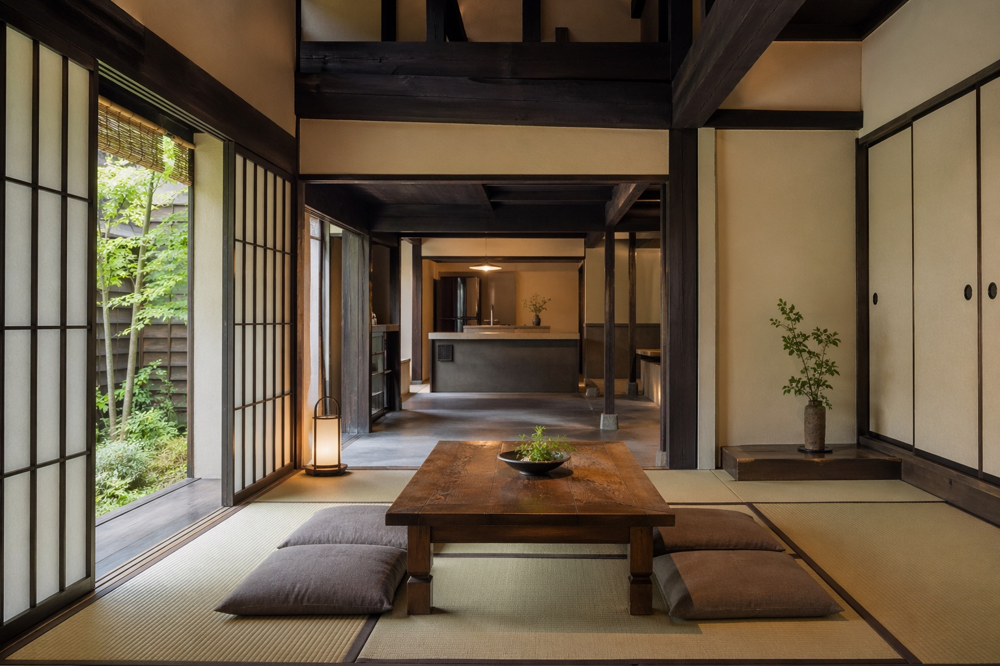

Rooms & Amenities
Rooms
定員は最大6名。家族旅行やグループ旅行にもゆったりとお過ごしいただけます。

Room 01
八畳の和室に、寝心地にこだわった低めのベッドを二台。 窓の外には坪庭の緑。朝は自然光で、ゆっくり目覚めていただけます。

Room 02
母屋から渡り廊下でつながる離れ。 少しこもって読書をしたり、昼寝をしたり。 家の中にもう一つ「静かな居場所」があります。

Room 03
古い梁をそのまま残した、天井の高い居間。 大きなローテーブルを囲んで、持ち寄ったお酒や奈良の味を、心ゆくまで楽しめます。
Amenities & Facilities
長い滞在でも不便なく過ごしていただけるよう、暮らしの道具を一通り揃えています。
奈良の草木を使ったオリジナルのバスアメニティもご用意しました。
Option 朝食の持ち込みサービス(近隣パン店・和食店から)、夕食のケータリング、 奈良のお茶会体験など、オプションもご相談いただけます。